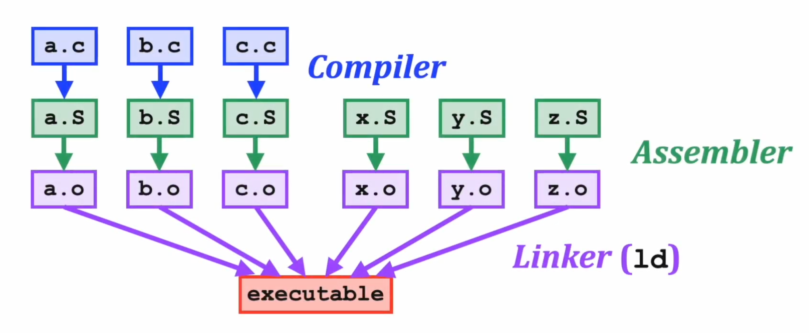
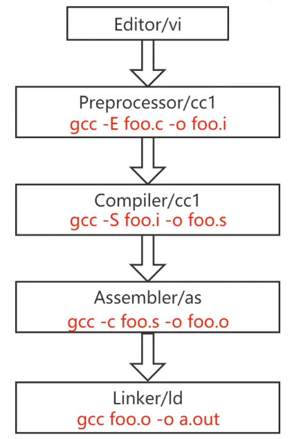

C 和 RISCV 汇编
- IR (Intermediate Representation): 中间代码的作用: 相当于有一个中间缓冲, 可以看成编译器的前端, 通过增加这一个模块, 可以让编译器的前端和后端解耦, 方便支持多种语言和多种目标架构.
frontend backend
+----------+ +------------+
C -> | Clang | -+ +-> | llvm-x86 | -> x86
+----------+ | | +------------+
+----------+ +-> +----------+ -+ +------------+
Fortran -> | llvm-gcc | ---> | llvm-opt | ---> | llvm-arm | -> ARM
+----------+ +-> +----------+ -+ +------------+
+----------+ | | +------------+
Haskell -> | GHC | -+ +-> | llvm-riscv | -> RISC-V
+----------+ LLVM IR LLRM IR +------------+volatile关键字: 告诉编译器不要优化这个语句.在 C 中插入汇编代码 [1]:
- 一般我们不会显式地指明用哪些寄存器或者内存地址, 让编译器来决定!
// 相当于 add c, a, b // r 代表用寄存器来做对应 (m 表示用内存来做对应) int foo (int a, int b) { int c; asm volatile ( "add %0, %1, %2\n" // 指令内容用双引号 : "=r" (c) // 输出 : "r" (a), "r" (b) // 输入 ); return c; }也可以用:
asm volatile ( "add %[sum], %[add1], %[add2]\n" : [sum] "=r" (c) // 输出 : [add1] "r" (a), [add2] "r" (b) // 输入 );
C 编译过程
Compiler, Assembler, Linker:
- Watch this video

gcc 编译选项:
-E: 只预处理, 不编译.-S: 生成汇编代码 (.s文件)-c: 只编译, 不链接. (生成.o文件)-o <file>: 指定输出文件名.-g: 在输出的文件中加入支持调试的信息.-v(verbose): 显示编译过程中的详细信息.

装好 RISCV 编译工具链, 创建一个简单的 C 语言程序 hello.c:
hello.c
#include <stdio.h>
int global_init = 0x11111111;
const int global_const = 0x22222222;
void main()
{
static int static_var = 0x33333333;
static int static_var_uninit;
int auto_var = 0x44444444;
printf("hello world!\n");
return;
}运行:
riscv32-unknown-elf-gcc -c hello.c -o hello.o # 只编译, 不链接用 riscv32-unknown-elf-readelf 查看生成的 .o 文件:
riscv32-unknown-elf-readelf -h hello.o > header_info.log # 查看 Header 信息, 并输出到文件得到:
header_info.log
ELF Header:
Magic: 7f 45 4c 46 01 01 01 00 00 00 00 00 00 00 00 00
Class: ELF32
Data: 2's complement, little endian
Version: 1 (current)
OS/ABI: UNIX - System V
ABI Version: 0
Type: REL (Relocatable file)
Machine: RISC-V
Version: 0x1
Entry point address: 0x0
Start of program headers: 0 (bytes into file)
Start of section headers: 916 (bytes into file)
Flags: 0x5, RVC, double-float ABI
Size of this header: 52 (bytes)
Size of program headers: 0 (bytes)
Number of program headers: 0
Size of section headers: 40 (bytes)
Number of section headers: 14
Section header string table index: 13
再查看 Section 信息:
riscv32-unknown-elf-readelf -S hello.o > section_info.log # 查看 Section 信息, 并输出到文件得到:
section_info.log
There are 14 section headers, starting at offset 0x394:
Section Headers:
[Nr] Name Type Addr Off Size ES Flg Lk Inf Al
[ 0] NULL 00000000 000000 000000 00 0 0 0
[ 1] .text PROGBITS 00000000 000034 00002e 00 AX 0 0 2
[ 2] .rela.text RELA 00000000 0002d8 000048 0c I 11 1 4
[ 3] .data PROGBITS 00000000 000062 000000 00 WA 0 0 1
[ 4] .bss NOBITS 00000000 000064 000004 00 WA 0 0 4
[ 5] .sdata PROGBITS 00000000 000064 000008 00 WA 0 0 4
[ 6] .srodata PROGBITS 00000000 00006c 000004 00 A 0 0 4
[ 7] .rodata PROGBITS 00000000 000070 00000d 00 A 0 0 4
[ 8] .comment PROGBITS 00000000 00007d 00001a 01 MS 0 0 1
[ 9] .note.GNU-stack PROGBITS 00000000 000097 000000 00 0 0 1
[10] .riscv.attributes RISCV_ATTRIBUTE 00000000 000097 000066 00 0 0 1
[11] .symtab SYMTAB 00000000 000100 000130 10 12 15 4
[12] .strtab STRTAB 00000000 000230 0000a7 00 0 0 1
[13] .shstrtab STRTAB 00000000 000320 000074 00 0 0 1
Key to Flags:
W (write), A (alloc), X (execute), M (merge), S (strings), I (info),
L (link order), O (extra OS processing required), G (group), T (TLS),
C (compressed), x (unknown), o (OS specific), E (exclude),
D (mbind), p (processor specific)
对 .o 文件进行反汇编:
riscv32-unknown-elf-objdump -S hello.o > disassembly.s # 反汇编, 并输出到文件得到:
disassembly.s
hello.o: file format elf32-littleriscv
Disassembly of section .text:
00000000 <main>:
0: 1101 addi sp,sp,-32
2: ce06 sw ra,28(sp)
4: cc22 sw s0,24(sp)
6: 1000 addi s0,sp,32
8: 444447b7 lui a5,0x44444
c: 44478793 addi a5,a5,1092 # 44444444 <static_var.0+0x44444440>
10: fef42623 sw a5,-20(s0)
14: 000007b7 lui a5,0x0
18: 00078513 mv a0,a5
1c: 00000097 auipc ra,0x0
20: 000080e7 jalr ra # 1c <main+0x1c>
24: 0001 nop
26: 40f2 lw ra,28(sp)
28: 4462 lw s0,24(sp)
2a: 6105 addi sp,sp,32
2c: 8082 retRISCV 汇编语言
基本格式:
<label>: <operation> # <comment><operation>的类型 [1]:instruction (指令)
pseudo-instruction (伪指令):
li x6, 5,nop, RISCV 中有定义directive (伪操作):
.macro ... .endm,.end,.text,.global _start告知汇编器的指示, 与 RISCV 规范无关.macro (宏):
.macro do_nothing nop .endm _start: do_nothing # 调用宏, 汇编器会将它展开
标签其实表示地址:
_start: li x6, 5 # _start 标签其实就是这条指令的地址
[1]
Lazyparser, “Compilation and linker,” 2025, Available: https://www.bilibili.com/video/BV1Q5411w7z5?spm_id_from=333.788.videopod.episodes&vd_source=42579e22289b6144ba0b2bdcf99834e3&p=5